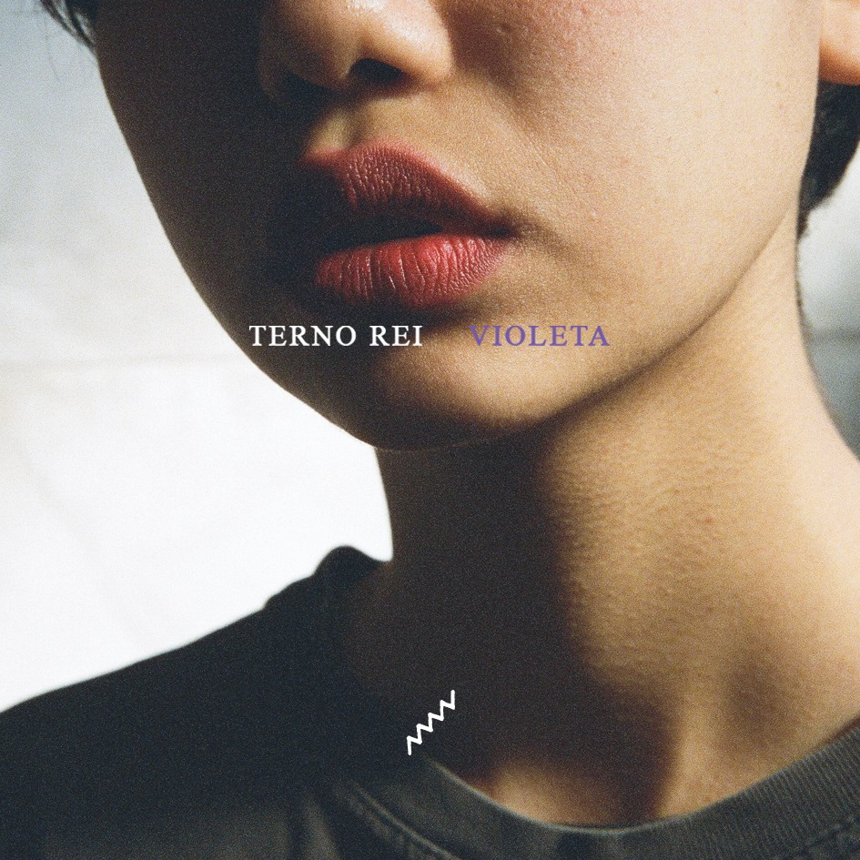
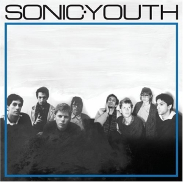
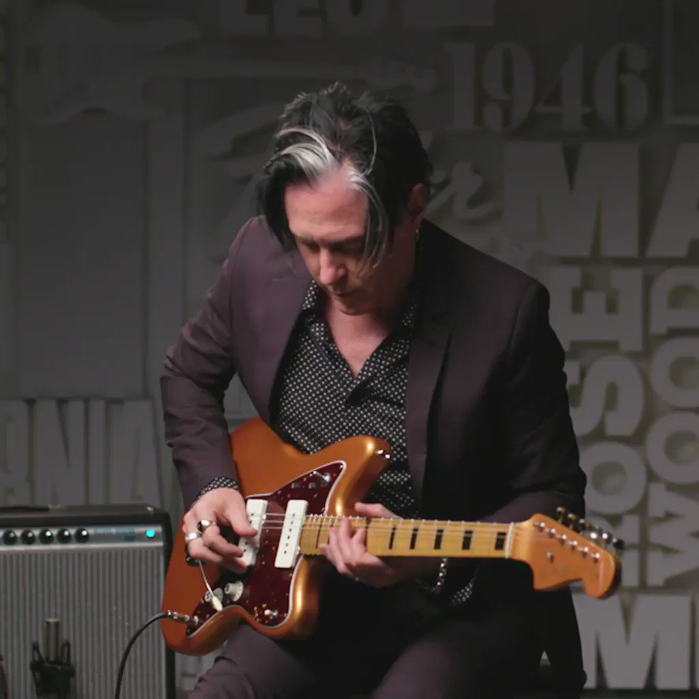
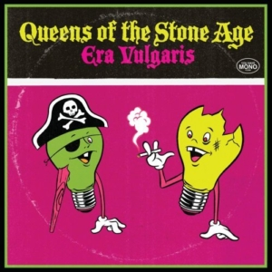
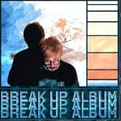
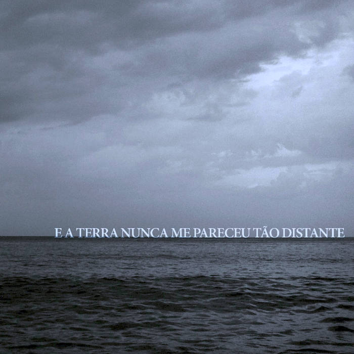

Top 10 Alguma Coisa Favorita
Aqui você encontra algumas coisas favoritas de Pedro Tavares, basta clicar nas indicações abaixo!
Top 8 Sites Favoritos:
-
Spotify

O Spotify é uma plataforma de streaming de áudio líder, oferecendo uma vasta biblioteca de músicas, podcasts e conteúdo de áudio. Com uma interface intuitiva e personalizada, os usuários podem explorar uma variedade de gêneros musicais, criar playlists personalizadas e descobrir novas faixas com base em seus gostos e preferências. O aplicativo permite que os usuários sigam seus artistas favoritos, recebam recomendações personalizadas e acessem playlists curadas por especialistas. Além disso, oferece recursos como modo offline, permitindo que os usuários ouçam música sem conexão à internet, e integração com dispositivos e sistemas de áudio.
-
O YouTube é uma plataforma de compartilhamento de vídeos amplamente utilizada, oferecendo uma gama diversificada de conteúdo, desde vídeos musicais e tutoriais até vlogs e documentários. Com uma interface intuitiva e recursos robustos de pesquisa, os usuários podem explorar facilmente uma vasta biblioteca de vídeos, encontrar conteúdo relevante para seus interesses e interagir com criadores através de likes, comentários e compartilhamentos. O YouTube também oferece recursos como transmissão ao vivo, permitindo que os usuários assistam eventos em tempo real, e a opção de criar playlists personalizadas para organizar vídeos favoritos. Além disso, com o YouTube Premium, os usuários podem desfrutar de uma experiência sem anúncios, acesso offline e reprodução em segundo plano, tornando-o uma escolha popular para entretenimento online em todo o mundo.
Youtube

-
Pinterest

O Pinterest é uma plataforma de descoberta visual que permite aos usuários explorar e compartilhar uma ampla variedade de ideias, inspirações e projetos em forma de imagens, conhecidas como "pins". Com uma interface altamente visual e recursos de pesquisa robustos, os usuários podem descobrir conteúdo relevante para seus interesses, desde decoração de interiores e receitas culinárias até ideias de moda e arte. Os usuários podem salvar pins em seus próprios "boards" (quadros) temáticos, organizando suas descobertas de forma personalizada. Além disso, o Pinterest oferece recursos de recomendação inteligente, sugerindo pins com base no histórico de navegação e nos interesses dos usuários.
-
O FilmGrab é uma plataforma online dedicada a cinéfilos e entusiastas do cinema, oferecendo uma extensa coleção de imagens de filmes de alta qualidade. Com uma interface simples e intuitiva, os usuários podem explorar uma variedade de filmes por meio de capturas de tela cuidadosamente selecionadas, que capturam momentos icônicos, composições cinematográficas e visuais impressionantes. O site permite que os usuários naveguem por filmes por gênero, diretor ou ano de lançamento, facilitando a descoberta de novos filmes ou a redescoberta de favoritos. Além disso, os usuários podem contribuir para a comunidade, compartilhando suas próprias capturas de tela e participando de discussões sobre cinematografia e design visual. Com sua coleção diversificada e foco na estética cinematográfica, o FilmGrab é uma fonte valiosa para aqueles que apreciam a arte do cinema e desejam explorar seu poder visual.
Film Grab
-
X (ex-Twitter)

O X é uma plataforma de mídia social onde os usuários podem compartilhar pensamentos, notícias, opiniões e muito mais em mensagens curtas chamadas de "tweets". Com uma limitação de caracteres de 280 por tweet, o X incentiva a comunicação concisa e direta, facilitando a disseminação rápida de informações e o engajamento em tempo real. Os usuários podem seguir outras contas para ver seu conteúdo em seus feeds, além de poderem retuitar (compartilhar) tweets de outras pessoas para seus próprios seguidores. O X também é conhecido por suas hashtags, que categorizam tweets sobre tópicos específicos e facilitam a descoberta de conversas relevantes. Com seu formato único e capacidade de conectar pessoas em todo o mundo em tempo real, o X se tornou uma ferramenta essencial para a comunicação, o jornalismo cidadão e o engajamento público.
-
O Instagram é uma plataforma de mídia social centrada em fotos e vídeos, que permite aos usuários compartilhar momentos do seu dia a dia, experiências, e interesses através de postagens visuais. Com uma ênfase na estética e na narrativa visual, os usuários podem editar e compartilhar fotos e vídeos em seus perfis, utilizando uma variedade de filtros e ferramentas de edição para personalizar seu conteúdo. Além disso, o Instagram oferece recursos como as "Stories", que permitem aos usuários compartilhar momentos efêmeros que desaparecem após 24 horas, e o "Reels", para criar vídeos curtos e criativos. Os usuários podem seguir outras contas para ver seu conteúdo em seus feeds, interagir através de likes, comentários e mensagens diretas, e explorar novos conteúdos através da aba "Explorar". Com sua abordagem centrada na visualização e na comunicação visual, o Instagram se tornou uma plataforma popular para expressão criativa, conexão social e descoberta de conteúdo inspirador.
Instagram

-
Volt.FM
Usuários do Spotify podem checar estatísticas de músicas, artistas e gêneros mais escutados através da plataforma Volt.fm. Além desses dados, o site traz informações curiosas sobre o repertório musical de cada pessoa, como as faixas mais antigas e a mais recentes escutadas. Ainda, também é possível conferir rankings, criar playlists com as canções mais reproduzidas e compartilhar as informações com amigos pelas redes sociais de forma gratuita. Confira, a seguir, como usar o Volt.fm e descobrir métricas musicais no Spotify pelo celular.
-
Letterboxd é uma plataforma online onde os entusiastas de filmes podem descobrir, revisar e compartilhar suas experiências cinematográficas. Com uma interface intuitiva e recursos robustos de pesquisa, os usuários podem explorar uma vasta biblioteca de filmes, criar listas personalizadas, registrar e avaliar filmes assistidos, e interagir com outros membros através de comentários e recomendações. O Letterboxd também oferece insights valiosos sobre tendências cinematográficas e listas de filmes populares, tornando-se uma comunidade dinâmica e essencial para cinéfilos de todas as partes.
Letterbox

Top 20 Discos Favoritos:
-
Violeta - Terno Rei
Resumo: "Violeta", álbum da banda Terno Rei, é uma obra que mescla elementos do rock alternativo e da música brasileira contemporânea, apresentando uma atmosfera sonora introspectiva e melódica. Com letras poéticas que exploram temas como amor, autodescoberta e melancolia, o álbum cativa os ouvintes com sua sonoridade envolvente e emocionalmente carregada, marcada por arranjos sofisticados e uma instrumentação diversificada. "Violeta" se destaca como um trabalho maduro e expressivo, consolidando a Terno Rei como uma das bandas mais importantes e inovadoras da cena musical brasileira atual.
Artista: Terno Rei
Gênros: Rock, Alternativo
Duração: 31min 13s
Ano: 2019
Selo: Balaclava Records
-
Resumo:O álbum "Validation" de Yun Li é uma jornada sonora emocionalmente rica e cativante que mergulha profundamente nas complexidades da experiência humana. Com uma fusão habilidosa de elementos eletrônicos e orgânicos, Li cria paisagens sonoras envolventes que exploram temas de identidade, amor, autodescoberta e resiliência. Cada faixa é uma narrativa musical única, guiando o ouvinte através de uma montanha-russa de emoções, desde momentos de contemplação tranquila até explosões de energia pulsante. Com letras poéticas e uma voz emotiva, Li tece histórias pessoais que ressoam com sinceridade e autenticidade. "Validation" não apenas valida a habilidade artística de Yun Li, mas também oferece uma experiência auditiva poderosa que convida os ouvintes a se conectarem com suas próprias jornadas emocionais.
Artista: Yun Li
Gênros: Hip-Hop, Trap
Duração: 40min 36s
Selo: YungTrash Records
Ano: 2023
2 Versões Diferentes:


Validation - Yun Li

-
Bella e o Olmo da Bruxa - Bella e o Olmo da Bruxa

Resumo: Esse é o primeiro álbum da banda de mesmo nome. Um álbum que vai desde o inde clássico passando por um midwest emo, chegando até a lembrar na faixa "Freya" um heavy metal antigo. Esse é um álbum que te faz esperimentar diversas sensações, boas e ruins. Um disco sentimental, que por ser produzido independentemente toda uma veia artística adolescente é bem explorada. Esse é um disco difícil de classificar, pois como a própria banda diz eles não querem se prender em um estilo apenas, mas explorar tudo e se expressar verdadeiramente.
Artista: Bella e o Olmo da Bruxa
Gênros: Rock Alternativo, Indie, Midwest
Duração: 38min 4s
Selo: Bella e o Olmo da Bruxa
Ano: 2020
-
Resumo: "Fundação", o álbum de estreia da banda paulistana E A Terra Nunca Me Pareceu Tão Distante, é uma jornada musical que marca uma evolução significativa em seu estilo. Este trabalho mostra uma transição do som atmosférico e contemplativo característico do pós-rock para uma abordagem mais enérgica e urgente. Desde a faixa de abertura, como "Daiane" e "Karoshi", até momentos mais contemplativos como "Todos os dias sua lembrança me assola, mas não importa" e "Se a resposta gera dúvida, então não é a solução", o álbum é uma exploração de diversas influências musicais, desde pós-hardcore até jazz, refletindo a versatilidade do grupo. "Fundação" não apenas demonstra a habilidade da banda em se reinventar dentro do estúdio, mas também estabelece novos conceitos e preferências instrumentais que servirão como base criativa para futuros trabalhos. É um registro coeso que equilibra momentos de recolhimento com explosões de energia, revelando a força e a capacidade de evolução da E A Terra Nunca Me Pareceu Tão Distante
Artista: E a Terra Nunca me Pareceu Tão Distante
Gênros: Progressivo, Instrumetal
Duração: 40min 29s
Selo: Balaclava Records
Ano: 2018
Fundação - E a Terra Nunca
me Pareceu Tão Distante -
The Archer - Alexandra Savior
Resumo: "The Archer" é o segundo álbum de estúdio da cantora e compositora norte- americana Alexandra Savior, lançado em março de 2020. O álbum apresenta uma atmosfera sombria e melancólica, com letras introspectivas que exploram temas como amor, perda e autodescoberta. A voz única de Savior, muitas vezes comparada à de artistas como Lana Del Rey e Fiona Apple, é acompanhada por arranjos instrumentais delicados e envolventes, que incorporam elementos do rock alternativo, do pop e do indie. As músicas de "The Archer" refletem uma jornada emocional complexa, com faixas como "Saving Grace" e "Crying All the Time" destacando-se pela sua sinceridade e vulnerabilidade. O álbum recebeu elogios da crítica por sua composição inteligente e atmosfera envolvente, solidificando o talento de Alexandra Savior como uma artista a ser observada no cenário musical contemporâneo
Artista: Alexandra Savior
Gênros: Indie Rock, Folk, Blues, Psicodélico
Duração: 30min 31s
Selo: 30th Century Records
Ano: 2020
-
Resumo: O EP autointitulado lançado pela banda Supercombo apresenta sete faixas inéditas, incluindo o single "Farol". Com participações especiais de Lucas Silveira da Fresno e do baixista Jackson Silva, o trabalho mantém a característica sonora do grupo, combinando elementos de rock alternativo, indie e música brasileira. As músicas são carregadas de energia, com camadas e nuances intricadas, destacadas por uma produção cuidadosa.
Artista: Supercombo
Gênros: Rock, Alternativo
Duração: 27min 46s
Selo: Supercombo
Supercombo-
Supercombo -
But Here We Are - Foo Fighters

Resumo: "But Here We Are", o mais recente álbum do Foo Fighters, é posto como um dos melhores lançamentos da banda até o momento. Destaca-se a habilidade de Dave Grohl em explorar temas de morte e tristeza, conferindo ao trabalho uma profundidade emocional que ressoa com o público. Além disso, o álbum marca uma evolução sonora, mantendo a energia característica da banda enquanto explora novas direções musicais. A sinceridade das letras e o impacto emocional das músicas solidificam o Foo Fighters como uma força duradoura no cenário do rock.
Artista: Foo Fighters
Gênros: Rock, Alternativo
Duração: 48min 14s
Selo: Rowswell Records
Ano: 2023
-
Resumo: No álbum "Vida Que Segue" (2016, Umbaduba), a banda gaúcha Não Ao Futebol Moderno demonstra uma evolução em sua sonoridade desde o lançamento do EP "Onde Anda Chico Flores?" (2014). Composta por Felipe, Kílary, Pedro e Marco, a banda explora guitarras empoeiradas e versos que abordam relacionamentos e conflitos típicos da juventude. Enquanto o EP anterior apontava para influências do real emo, como American Football e Mineral, neste trabalho, a banda mergulha no Jangle Pop/Pós-Punk dos anos 1980, dialogando com o presente através de referências a artistas contemporâneos como Mac DeMarco e Real Estate. Faixas como "Janeiro" destacam-se por criar uma atmosfera serena, com letras íntimas e uma base musical que evoca os sons recentes da cena alternativa norte-americana.
Artista: Não ao Futebol Moderno
Gênros: Rock, Alternativo, Shoesgaze, Dream Pop
Duração: 30min 54s
Selo: Não ao Futebol Moderno, Umbaduba Records
Ano: 2016
Vida Que Segue -
Não ao Futebol Moderno
-
Rock Jr -
Eliminadorzinho
Resumo: Após anos de elaboração, contratempos e mudanças de plano, a eliminadorzinho finalmente lança seu primeiro álbum completo, "Rock Jr", em parceria com o selo e produtora Cavaca Records. Celebrando sua trajetória marcada por quatro EPs divulgados, abertura de shows para bandas internacionais como Cloud Nothings e apresentações em diversas capitais do Brasil, o trio formado por Gabriel Eliott, João Pedro Haddad e Tiago Souto Schützer mergulha em influências que vão do Punk ao Indie, passando pelo Rock e Shoegaze com apelo Pop. O álbum, produzido por Luden Viana (E A Terra Nunca Me Pareceu Tão Distante), retrata de forma criativa e com bom humor as experiências da vida adulta, explorando temas como romances, amizades, convivência, tempo e rotina, em uma série de episódios do cotidiano urbano. A influência de bandas contemporâneas como Yo La Tengo, Title Fight, Polara e Raça, assim como referências de jogos e filmes, enriquecem o universo sonoro e lírico da banda, que se destaca pela sinceridade e autenticidade em suas composições.
Artista: Eliminadorzinho
Gênros: Rock, Indie, Pós-Punk
Duração: 33min 6s
Selo: Cavaca Records
Ano: 2021
-
Resumo: "Você Não Sabe de Nada" é um álbum eclético que mantém o DNA da banda O Grilo enquanto explora uma variedade de ritmos brasileiros, como axé, forró e brega em faixas como "Onde Flor" e "Guitarrada", além de flertar com o indie novo em "Meu Amor" e se inspirar no Daft Punk para criar o groove de "Adeus". Mesmo com essas influências, a banda continua a misturar o rock nacional com seus próprios elementos distintivos, incluindo riffs de guitarra marcantes, ritmos animados e vocais expressivos que transmitem emoções profundas das letras. As músicas, embora simples, contam boas histórias com metáforas e trocadilhos, garantindo um humor cativante. Com um álbum de estreia sólido, O Grilo apresenta uma sonoridade agradável e mensagens positivas, mostrando versatilidade e por que é uma das bandas a serem observadas atualmente. Ideal para momentos descontraídos ou para elevar o humor, "Você Não Sabe de Nada" surpreende os ouvintes com sua diversidade musical e letras significativas.
Artista: O Grilo
Gênros: Rock, Pop, Rock Abrasileirado
Duração: 37min 52s
Selo: Rockambole
Ano: 2021
Você Não Sabe de Nada -
O Grilo -
Is This It - The Strokes
Resumo: "Is This It" é o álbum de estreia da banda norte-americana The Strokes, lançado em 2001. Este icônico disco marca o renascimento do rock alternativo, apresentando uma sonoridade enérgica e despojada que conquistou fãs em todo o mundo. Com influências do garage rock e do punk, as músicas do álbum são impulsionadas por riffs de guitarra cativantes, letras perspicazes e o vocal distintivo de Julian Casablancas. Faixas como "Last Nite" e "Someday" tornaram-se hinos do rock dos anos 2000, solidificando o status do The Strokes como uma das bandas mais influentes da sua geração.
Artista: The Strokes
Gênros: Indie Rock, Alternativo, Garage Rock
Duração: 35min 48s
Selo: The Strokes
Ano: 2001
-
Resumo: "Them Crooked Vultures" é o álbum homônimo e único lançado pela superbanda de rock alternativo composta por Josh Homme (Queens of the Stone Age, Kyuss) no vocal e guitarra, Dave Grohl (Foo Fighters, Nirvana) na bateria e John Paul Jones (Led Zeppelin) no baixo e teclado. Lançado em 2009, o álbum é uma fusão de diversos estilos, incluindo rock alternativo, hard rock, stoner rock e até mesmo elementos de funk e blues. A sonoridade é caracterizada por riffs de guitarra pesados, ritmos poderosos de bateria e linhas de baixo marcantes, tudo isso combinado com letras enigmáticas e vocais distintos de Homme. Destacam-se faixas como "New Fang", "Mind Eraser, No Chaser" e "Elephants", que capturam a energia e a criatividade deste projeto colaborativo único. O álbum recebeu aclamação da crítica e conquistou uma base de fãs dedicada, mas até o momento não houve um segundo lançamento da banda.
Artista: Them Crooked Vultures
Gênros: Rock, Blues, Stoner
Duração: 1h 6min
Selo: Them Crooked Vultures
Ano: 2009
Them Crooked Vultures - Them Crooked Vultures
-
...Like a Clockwork -
Queens of Stone Age
Resumo: "Like Clockwork" é o sexto álbum de estúdio da banda de rock alternativo Queens of the Stone Age, lançado em 2013. Este álbum marca o retorno da banda após um hiato de seis anos desde seu último lançamento de estúdio. Produzido por Josh Homme e com colaborações de renomados artistas como Dave Grohl (Foo Fighters, Nirvana), Trent Reznor (Nine Inch Nails), Elton John , entre outros, "Like Clockwork" apresenta uma sonoridade diversificada que varia do rock pesado e frenético característico da banda a momentos mais introspectivos e melódicos. O álbum é elogiado por sua produção impecável, letras emocionantes e performances poderosas, destacando-se faixas como "My God Is the Sun", "I Sat by the Ocean" e "Smooth Sailing". "Like Clockwork" recebeu aclamação da crítica e foi um sucesso comercial, consolidando o Queens of the Stone Age como uma das bandas mais importantes e influentes do cenário do rock alternativo contemporâneo.
Artista: Queens of Stone Age
Gênros: Rock, Stoner
Duração: 46min 3s
Selo: Matador Records
Ano: 2013
-
Resumo: O segundo álbum de Findlay, intitulado "The Last of the 20th Century Girls", representa uma evolução em sua jornada musical, explorando temas complexos como luto, perda e reconstrução da confiança. Produzido por Antoine 'Chab' Chabert, o álbum apresenta uma fusão de estilos que incluem alt-indie, pop psicodélico, lo-fi chill e rock alternativo, proporcionando uma experiência sonora diversificada. Com uma narrativa de amadurecimento tardio, o álbum captura uma sensação de nostalgia e melancolia, refletindo as experiências únicas de uma geração milenar.
Artista: Findlay
Gênros: Inide, Garage Rock, Pop Psicodélico
Duração: 50min 48s
Selo: Mogg Music
Ano: 2022
The Last of 20th Century Girls - Findlay
-
Art of Doubt - Metric
Resumo: "Art of Doubt" é o sétimo álbum de estúdio da banda canadense de indie rock, Metric, lançado em setembro de 2018. Este álbum apresenta uma abordagem mais crua e enérgica em comparação com os trabalhos anteriores da banda, com uma sonoridade que combina elementos de rock alternativo, new wave e eletrônica. As letras exploram temas como dúvida, incerteza e a busca por autenticidade em um mundo tumultuado, refletindo o clima político e social da época. Destacam-se faixas como "Dark Saturday", "Now or Never Now" e "Dressed to Suppress". "Art of Doubt" recebeu elogios da crítica por sua produção cuidadosa, performances vocais poderosas de Emily Haines e uma fusão habilidosa de influências musicais diversas.
Artista: Metric
Gênros: Indie Rock, New Wave, Eletrônica
Duração: 58min 22s
Selo: MMI
Ano: 2018
-
Resumo: "Night Visions" é o álbum de estreia da banda Imagine Dragons, lançado em setembro de 2012. Este álbum marcou a ascensão meteórica da banda para o estrelato, apresentando um som caracterizado por elementos de rock alternativo, pop e indie, com toques de música eletrônica. O álbum incluiu alguns dos maiores sucessos da banda, como "It's Time", "Radioactive" e "Demons", que se tornaram hinos de uma geração e dominaram as paradas musicais ao redor do mundo. As letras do álbum abordam temas como autodescoberta, superação de desafios e a luta contra a escuridão interior, conectando-se com um público amplo e diversificado. "Night Visions" recebeu aclamação da crítica e estabeleceu o Imagine Dragons como uma das bandas mais influentes e populares da década de 2010.
Artista: Imagine Dragons
Gênros: Alternativo, Pop, Indie
Duração: 1h 17min
Selo: KIDinaKORNER
Ano: 2012
Night Visions - Imagine Dragons

-
Olhar Para Trás - Terraplana

Resumo: "Olhar Pra Trás" (2023), o primeiro álbum de estúdio da banda curitibana Terraplana, apresenta o trabalho dos músicos Stephani Heuczuk, Vinícius Lourenço, Cassiano Kruchelski e Wendeu Silverio em oito composições que combinam elementos ruidosos e sentimentais, remetendo a influências como My Bloody Valentine e Slowdive. Produzido por Gustavo Schirmer e mixado por Nico Braganholo, o álbum destaca faixas como "Memórias" e "Conversas", mostrando a evolução da banda desde seu EP "Exílio" (2017).
Artista: Terraplana
Gênros: Rock, Shoesgaze
Duração: 28min 24s
Selo: Balaclava Records
Ano: 2023
-
Resumo: "A Love Supreme" é um álbum de jazz icônico lançado em 1965 pelo lendário saxofonista John Coltrane. Este álbum é amplamente considerado uma obra-prima do jazz e uma das gravações mais influentes da história do gênero. Composto por uma única suíte de quatro partes, Coltrane expressa sua devoção espiritual e musical através da música. As improvisações do quarteto, composto por Coltrane no sax tenor, McCoy Tyner no piano, Jimmy Garrison no baixo e Elvin Jones na bateria, são excepcionais e profundamente emotivas. A combinação de composição complexa, improvisação brilhante e um senso de espiritualidade profundamente pessoal fazem de "A Love Supreme" uma obra de arte singular e intemporal, que continua a inspirar e influenciar músicos até os dias de hoje.
Artista: John Coltrane
Gênros: Jazz, Instrumental
Duração: 32min 46s
Selo: The Verve Music Group
Ano: 1965
A Love Supreme -
John Coltrane -
Força Bruta - Jorge Ben Jor
Resumo: "Força Bruta" é o nono álbum de estúdio do renomado músico brasileiro Jorge Ben, lançado em 1970. O álbum é frequentemente considerado um marco na carreira de Jorge Ben e na música brasileira em geral. Ele apresenta uma fusão inovadora de samba, funk, rock e elementos africanos, criando um som único e vibrante que cativou o público na época e continua influenciando músicos até hoje. Faixas icônicas como "Que Maravilha", "Oba, Lá Vem Ela" e "Menina Mulher da Pele Preta" demonstram a habilidade de Jorge Ben em criar melodias cativantes e letras inteligentes que capturam a essência da cultura brasileira. "Força Bruta" é um álbum essencial para qualquer amante da música brasileira e um testemunho do talento visionário de Jorge Ben como compositor e intérprete.
Artista: Jorge Ben Jor
Gênros: Samba
Duração: 40min 32s
Selo: Universal Music International
Ano: 1970
-
Resumo: Ana Frango Elétrico retorna com seu aguardado terceiro álbum de estúdio, "Me Chama de Gato Que Eu Sou Sua", lançado em parceria com os selos RISCO, Mr Bongo e Think! Records. Após quatro anos desde seu último trabalho, este álbum destaca o amadurecimento técnico e estético da jovem cantora, compositora e produtora musical carioca, agora com 25 anos de idade. Ana Frango Elétrico mostra sua versatilidade ao dirigir, cantar, compor, tocar e produzir o álbum, acompanhada por talentosos músicos como Dora Morelenbaum nos arranjos de cordas e Marlon Sette nos metais. O álbum explora sonoridades ecléticas e inovadoras, combinando elementos de diferentes décadas com processamentos futuristas, enquanto Ana mergulha em reflexões sobre um amor não-binário e sua jornada na produção musical, buscando esculpir o ar e testar os limites dos sons orgânicos.
Artista: Ana Frango Elétrico
Gênros: MPB, Eletropop, Soul
Duração: 31min 29s
Selo: RISCO
Ano: 2023
Me Chama de Gato que Eu Sou Toda Sua - Ana Frango Elétrico

Menções Honrosas:
Top 10 Bandas Favoritas:
-
Supercombo
Mais de um milhão de inscritos no YouTube. Shows constantemente esgotados pelas cinco regiões brasileiras, com fãs que levam os cinco discos na ponta da língua. Assim é a Supercombo, banda fixada em São Paulo, que tem no rock e na internet suas principais bases artísticas. Sua música conquista pelo esmero e cuidado nas composições, apoiadas em climas criados com uma mistura de rock moderno com várias influências de ritmos latinos, música brasileira, filmes, games, seriados e todo tipo de arte que lhes sirva de inspiração. Tudo isso de forma a soar acessível a todos os públicos, sem perder o sabor indie, a complexidade e o frescor de estar produzindo algo genuinamente novo e interessante. Em suas músicas, a banda apresenta como principal essência temática os dilemas e as emoções diárias que marcam a vida das pessoas, tornando temas densos e profundos em letras diretas e otimistas. Formada em 2007 em Vitória (ES), atualmente a Supercombo é integrada por Leo Ramos (voz e guitarra), Carol Navarro (baixo e voz), Paulo Vaz (teclados) e André Dea (bateria).
Integrantes Atuais:
Discos:
-
Terno Rei
A Terno Rei já lançou 6 EPs, 4 álbuns e 14 singles. O EP de 2015 (Trem Leva Minhas Pernas) foi o primeiro trabalho lançado junto com o selo, também paulistano, Balaclava Records – o qual o grupo faz parte. Sempre tratando de assuntos cotidianos, como relações, saudade, autoconhecimento e amadurecimento, o grupo utiliza de arranjos e solos elaborados e o uso de sintetizadores, no último trabalho, como marca de sonoridade.
Integrantes:
Discos
-
Sonic Youth
Sonic Youth é uma banda seminal de rock alternativo que emergiu do cenário underground de Nova York nos anos 80, desafiando convenções musicais e estabelecendo uma abordagem única e experimental. Combinando guitarras dissonantes, letras obscuras e uma estética artística, eles influenciaram uma geração inteira de músicos. Seu som inovador e sua atitude desafiadora continuam a ressoar no mundo da música até hoje, solidificando-os como uma das bandas mais importantes e duradouras do panorama musical alternativo.
Integrantes:
Discos
- Walls Have Ears -
2024 - In/Out/In -
2022 - The Eternal -
2009 - The Destoyed Room -
2006 - Rather Ripped -
2006 - Sonic Nurse -
2004 - Murray St. -
2002 - NYC Ghosts & Flowers -
2000 - A Thousand Leaves -
1998
- Washing Machine -
1995 - Experimental Jet Set,
Trash And No Star- 1994 - Dirty -
1992 - Goo -
1990 - Daydream Nation -
1988 - The Whitey Album -
1988 - Master-Dik -
1987 - Sister -
1987 - Evol -
1986 - Bad Moon Rising -
1985
- Confusion Is Sex -
1983 - Sonic Youth -
1981 
- Walls Have Ears -
-
Foo Fighters
Foo Fighters é uma potência do rock contemporâneo, nascida dos escombros da banda Nirvana após a trágica morte de Kurt Cobain. Fundada pelo ex-baterista do Nirvana, Dave Grohl, a banda se tornou sinônimo de energia inabalável, riffs cativantes e letras emocionais. Ao longo das décadas, eles evoluíram, mantendo sua essência crua e autêntica, enquanto exploravam uma gama de estilos e temas. Com uma base de fãs leal e uma impressionante lista de sucessos, os Foo Fighters solidificaram seu lugar como uma das bandas mais influentes e duradouras do rock contemporâneo.
Integrantes Atuais:
Discos
-
Queens of Stone Age

Queens of the Stone Age é uma banda icônica do rock alternativo, liderada pelo carismático Josh Homme. Combinando riffs poderosos de guitarra, ritmos pulsantes e letras sombrias, eles criaram um som distintamente cativante que desafia definições de gênero. Desde o lançamento de seu álbum de estreia homônimo em 1998, eles têm sido pioneiros na cena musical, expandindo constantemente seus horizontes sonoros enquanto mantêm uma base sólida de fãs.
Integrantes:
- Josh Homme
(Guitarra) - Michael Shuman
(Baixo) - Troy Van Leeuwen
(Guitarra)  - Jon Theodore
(Bateria) - Dean Fertita
(Piano)
Discos
- In Times New Roman... -
2023 - Villains -
2017 - ...Like a Clockwork -
2013
- Era Vulgaris -
2007  - Lullabies To Paralyze -
2005
- Songs For The Deaf -
2002
- Rated R -
2000 - Queens of The Stone Age -
1998 - The Split Cd -
1998
- Josh Homme
-
Yun Li

O que começou como um projeto nada sério, com letras e batidas engraçadas som pretenção nenhuma, aos poucos foi se encaminhando para uma carreira séria e de respeito. O antes conhecido como Yung Lixo, mas agora como Yun Li, é um musico que se propõe a compor Hip-Hop, sempre buscando novas maneiras de se explorar o gênero. Podemos ver isso em seus 3 últimos álbuns, cada um com uma estética diferente, com uma narrativa diferente, contudo, sempre estando presente a essência do artista. Hoje Vitor, já tem uma base de fans estabelecida, e além da música, se aventura produzindo documentários sobre seus álbuns, juntamente com Biffe, seu produtor.
Discos
- Bittersweet Memories -
2023 - Validation -
2022
- Cybertapes -
2022 - Break Up Album -
2021  - Trashtalk -
2020
- Quarentapes -
2020 - Segura Esse Moleque-
2018
- Bittersweet Memories -
-
E a Terra Nunca Me Pareceu Tão Distante
"E a Terra Nunca Me Pareceu Tão Distante" é uma banda brasileira de rock alternativo e pós-rock. Originária de São Paulo, a banda é conhecida por suas composições atmosféricas e emotivas, que combinam elementos de rock, post-rock e música experimental. Seu som expansivo e introspectivo muitas vezes evoca uma sensação de jornada emocional, com camadas de guitarras, sintetizadores e texturas sonoras que criam paisagens sonoras envolventes. Com letras poéticas e reflexivas, a banda aborda uma variedade de temas, desde questões existenciais até observações sobre a vida urbana contemporânea.
Integrantes:
Discos
- Linguagem -
2023 - Fundação -
2018 - Medo de Morrer |
Medo de Tentar - 2016 - Vazio -
2014 - E a Terra Nunca me
Pareceu Tão Distante - 2014 
- Linguagem -
-
Imagine Dragons
Imagine Dragons é uma banda de rock alternativo originária de Las Vegas, Estados Unidos, formada em 2008. Composta por Dan Reynolds (vocal), Wayne Sermon (guitarra), Ben McKee (baixo) e Daniel Platzman (bateria), a banda ganhou destaque internacional com o lançamento de seu álbum de estreia, "Night Visions", em 2012. Eles são conhecidos por seus sucessos radiofônicos, como "Radioactive", "Demons" e "Believer", que apresentam uma mistura de elementos de rock, pop e eletrônica. A música do Imagine Dragons é frequentemente marcada por letras inspiradoras e emotivas, além de arranjos dinâmicos e energéticos. Desde então, eles lançaram vários álbuns de sucesso e continuam a atrair uma base de fãs globalmente diversificada com seu som distintivo e cativante.
Integrantes:
Discos
-
Menores Atos
Menores Atos é uma banda brasileira de post-hardcore e rock alternativo formada no Rio de Janeiro. Com influências que vão desde o emo até o post-rock, a banda é conhecida por suas composições introspectivas e atmosféricas. Suas letras muitas vezes exploram temas pessoais e emocionais, enquanto a música cria uma paisagem sonora envolvente e melancólica. Lançaram seu álbum de estreia, "Animalia", em 2011, consolidando-se como uma presença significativa na cena musical independente brasileira. Desde então, continuaram a lançar músicas e álbuns que cativam os ouvintes com sua sinceridade lírica e sua abordagem única do gênero. Menores Atos tem sido elogiado tanto pela crítica quanto pelos fãs por sua autenticidade e contribuição para o cenário alternativo nacional.
Integrantes:
Discos
-
Terraplana

A banda terraplana se tornou destaque da cena independente brasileira após lançar o álbum de estreia ‘olhar pra trás’, pelo selo Balaclava Records, em março de 2023. O trabalho traz uma atmosfera nostálgica, com letras reflexivas sobre relacionamentos, perdas, amizades, passado e futuro, cobertas sob uma camada sonora de guitarras que remetem a subgêneros do rock alternativo como o shoegaze, dream-pop, post-rock e slowcore. Formada em Curitiba, no Paraná, por Stephani Heuczuk (voz e baixo), Vinícius Lourenço (voz e guitarra), Cassiano Kruchelski (voz e guitarra) e Wendeu Silverio (bateria), a banda atualmente está em tour promovendo seu álbum de estúdio. Além de diversas datas esgotadas, obteve destaque por abrir o show do Deafheaven e por estar presente no line-up do Primavera Sound São Paulo de 2023.
Integrantes:
Discos